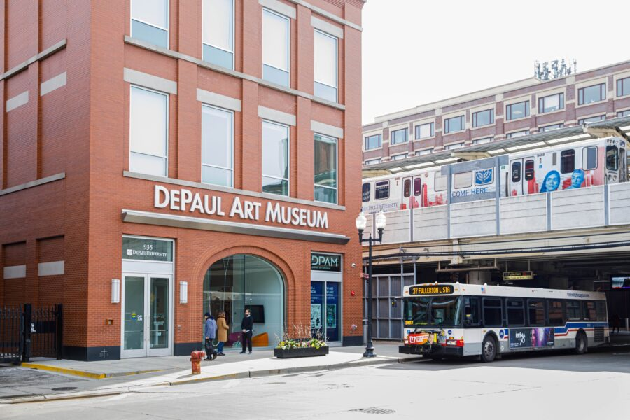

Family Day: From Page to Play: Collage and Sketchbook Explorations
Though separated by generations, Alice Tippit and Barbara Nessim share a deep engagement with drawing, collage, and the sketchbook as a space for experimentation, reflection, and discovery. Building on these practices, we are excited to welcome artists Regin Igloria and Marylu Herrera, who will guide an all-ages workshop inviting participants to explore collage and sketchbook-making as open-ended creative processes. Through drawing, layering, and combining found and imagined imagery, participants will be encouraged to experiment, take risks, and develop their own visual language—creating sketchbooks that can serve as spaces for play, memory, and ongoing inquiry.
This program is part of the Learning Studio initiative.